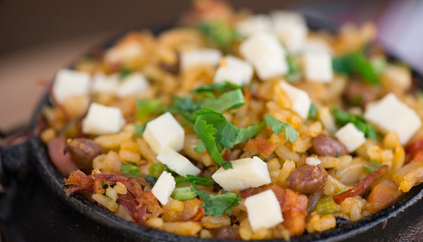

Baião de Dois

Baião de dois é um prato tipico da região Nordeste e partes da região Norte do Brasil, como Rondônia, Acre, Amazonas e Pará.
Consiste num preparado de arroz e feijão, de preferência o feijão verde ou feijão novo.
Ingredientes
- Calabresa
- Carne seca
- Queijo
- Arroz
- Bacon
Preparo
- Pique todos os ingredientes.
- Frite a calabresa e o bacon um de cada vez e por fim os dois juntos.
- Adicione o Arroz e cozinhe até secar toda água.
- Adicione o queijo, deixe descansar e enfim sirva-se
Home page